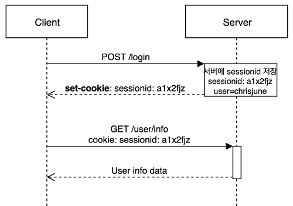

쿠키
서버에서 어떤 데이터를 브라우저에 저장하고, 다시 활용하는 데이터
서버는 클라이언트에 응답을 할때 Set-Cookie 해더를 설정할 수 있다
Set-Cookie: <cookie-name>=<cookie-value>; Domain=<domain-value>; Secure; HttpOnly
그럼 응답 받은 브라우저는 자신의 Cookie 저장소에 저장하게 된다
향후 Http 요청을 할 때 Cookie 해더를 설정하여 설정된 모든 Cookie를 해더에 담아서 요청을 하게 된다.
Cookie: yummy_cookie=choco; tasty_cookie=strawberry
종류
Session Cookie- 만료 시간을 명시하지 않으면 브라우저 종료될 때 삭제됨
Persistent Cookie:Expires,Max-Age속성에 명시된 기간이 지나면 삭제됨, 이건 클라이언트가 처리하므로 클라이언트 시간이 기준
속성
HttpOnly:- 클라이언트가
Document.cookie를 통해서 접근할 수 없고 요청 시 해더에서만cookie값에 접속할 수 있도록 설정한 쿠키
- 클라이언트가
SameSite:None: 도메인을 검증하지 않아 다른 사이트 모두가 해당 쿠키에 접근이 가능 (https 만)Lax: 브라우저 상 이동 (a테그 등) 에서만 접근가능 (fetch 나 이런걸로는 안됨)Strict: SameSite 도메인만 허용 가능
Domain:- 해당 도메인에 접속된 사이트인 경우에만 전송하도록
- 만약 서버에서 설정된
Set-Cookie가 클라이언트와 다른경우 서드파티 쿠키로 분류된다 이걸 이용해 특정 페이지에 접속한 유저 에 대해 이벤트 쿠폰을 뿌리거나 하는게 가능하다
Path:- 보통은
/로 설정되어 하위 경로에도 전부 쿠키가 포함되지만 이걸 하위로만 제한 하는것도 가능하다
- 보통은
Secure:- HTTPS 에서만 쿠키를 포함하겠다는 뜻
특징
- 최대 4kb 저장 가능
로컬 스토리지와 차이점
- 로컬 스토리지는 기본적으로 브라우저 클라이언트가 값을 쓰고 읽기위해 만들어 졌고
- 쿠키는 서버가 브라우저에 값을 쓰고 읽기위해 만들어 졌다.
물론 로컬 스토리지와, 쿠키 모두 반대 용도로도 사용할 수 있는 방법은 있지만 핵심 설계는 이렇다.
특히 쿠키는 단순히 클라이언트에서만 사용할 용도면 로컬스토리지로 사용이 권해지는데 이유는 HTTP 요청 시 불필요한 쿠키 해더가 설정되는 꼴이기 때문이다
HTTP 에서는 서드파티 쿠키 설정은 불가하다
참고자료
정확히 말하면 클라이언트와 서버가 다른 호스트에 존재한다면 서버에서 쿠키설정은 불가하다
CSRP 공격이라고 해서 쿠키를 탈취해서 사용자 정보를 얻을 수 있으므로 브라우저 측에서 서드파트 쿠키(웹 페이지와 다른 호스트) 를 차단한다
해결 방법은 HTTPS 를 할당 받아서 SameSite 값을 None 으로 설정할 수 밖에 없다
세션
쿠키에 특성을 사용하여 서버측에서 일련의 상태를 유지시키는 기술
주로 로그인 유지 & 관리에 사용 된다
과정

- 먼저 세션을 사용할 주소에 접속을하면 서버는 고유한
session ID를 생성한 뒤 자동로그인을 구현하고 싶다면Persistent Cookie로 쿠키를 설정하고 아니면Session Cookie로 설정하여 응답을 보낸다 (이때session ID를 PK로 사용하여 식별하고 싶은 값을 테이블등에 보관한다) - 그 후 다른 페이지들에 접속이나 API 요청을 보낼 때
cookie해더에session ID를포함하여 요청이 진행된다 - 요청받은 서버는
session ID가 테이블에 있는지 판단하고 있으면 정상응답을 보낻다 - 만약
session ID가 존재하지 않는 경우 로그아웃이나, 재발급을 하게 설계가 된다
단점
대용량 세션 처리
모든 세션에 session ID 테이블 형태로 저장하는데 이게 양이 적을때는 인덱싱이 크게 느리지 않지만 대규모 사이트에 경우 인덱싱에 속도가 느려질 수 있다
세션 탈취
어떠한 방법으로든 session ID 만 확보하면 사실상 로그인 된 것과 다름이 없다
어치피 검증은 session ID 만 하니까
- 대응책
- 한 유저에 대해서
session ID를 하나만 사용하도록 즉 다중 로그인에 대한 제한을 둠 Session ID재발급 주기를 빠르게 설정함 (탈취해도 많은 작업은 못하도록)- 브라우저나 접속된 OS 등이 담겨있는
User-agent해더를 검증하여Session ID를 사용하고 있는 원래 사용자에User-agent와 같은지를 검증
- 한 유저에 대해서